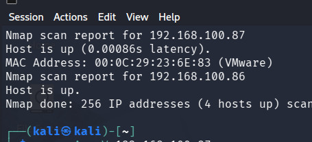
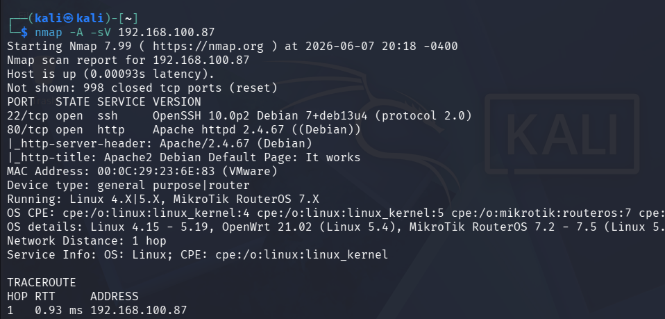
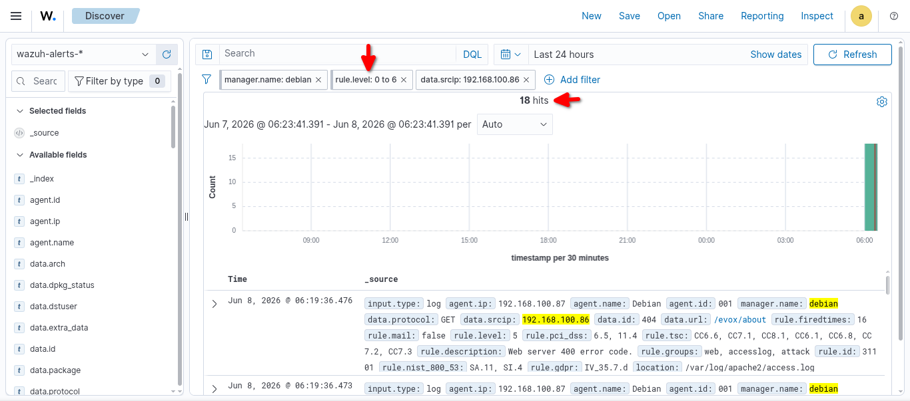
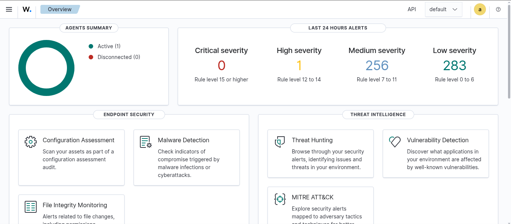

⚠️ Ethics Disclaimer:
Only attempt this on hardware you own or have explicit written permission to test. Unauthorized access is illegal, and no tutorial justifies crossing that line.
T1046
Network Service Discovery
Tactic: Discovery
❌ Missed
Objective
Identify live hosts, open ports, running services, and OS details on the target.
Commands
bash — kali
$ sudo nmap -sn 192.168.100.0/24
$ sudo nmap -A 192.168.100.87
Evidence

🖼️
NmapScan-sn.png
nmap -sn 192.168.100.0/24 Host discovery results
nmap -sn — host discovery

🖼️
Nmap-sV-A.png
nmap -sV -A 192.168.100.87 Service & OS fingerprinting
nmap -sV -A — service fingerprinting
Findings
Port 22 open — OpenSSH 10.0p2 (Debian 13)
Port 80 open — Apache 2.4.67
OS: Linux Debian 13 confirmed via SSH banner (deb13u4)
MAC: VMware VM, 1 hop away
Wazuh Result
❌ Missed
18 low-level alerts fired (rule level 0–6). No meaningful threat alert was raised for the network scanning activity.

🖼️
WazuhLowLevelAlert.png
18 low-level alerts in Wazuh after Nmap scan
Wazuh — 18 low-level alerts (post-scan)
T1110.001
Brute Force — SSH
Tactic: Credential Access
✅ Detected
Objective
Attempt to gain access to the SSH service using a credential wordlist.
scp transfer + ls confirmation File successfully exfiltrated
SCP — file exfiltrated to Kali

🖼️
FinalWazuh.png
Wazuh dashboard after all attacks Still only 1 high-severity alert
Wazuh — still 1 high alert after full attack chain
Findings
File successfully transferred to Kali
Confirmed via cat /home/kali/sensitive_data.txt
Wazuh Result
❌ Missed
SCP transfer was not detected. Network-level file transfer monitoring is not enabled in the default Wazuh configuration.
Part 3 — Detection Coverage Matrix
Technique
ID
Tactic
Wazuh Default
Network Scan
T1046
Discovery
❌ Missed
SSH Brute Force
T1110.001
Credential Access
✅ Detected
Reverse Shell
T1059.004
Execution
❌ Missed
Cron Persistence
T1053.003
Persistence
❌ Missed
Create Local Account
T1136.001
Persistence
⛔ Blocked by OS
Log Clearing
T1070.003
Defense Evasion
❌ Missed
Local Data Collection
T1005
Collection
❌ Missed
Exfiltration Over SCP
T1048
Exfiltration
❌ Missed
1
Detected
6
Missed
1
Blocked by OS
12.5%
Detection Rate
Summary: Wazuh detected 1 out of 8 techniques with a meaningful alert out of the box.
This highlights significant detection gaps that require custom rule development and FIM
configuration to address — particularly around persistence, defense evasion, data collection, and exfiltration.